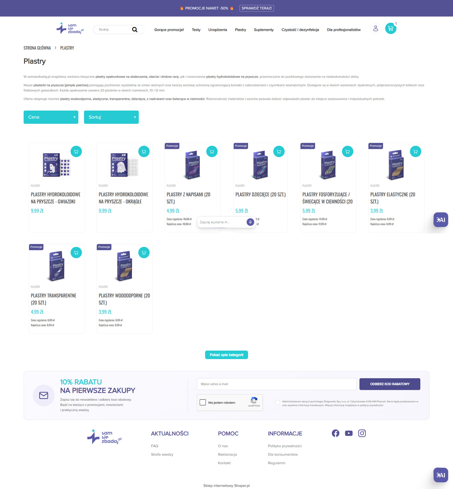
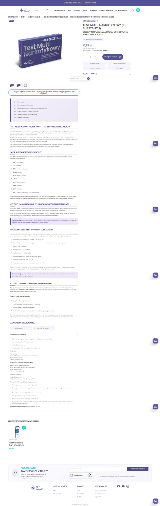

01 / E-COMMERCE
Shoper & UX
Autorska rozbudowa sklepu samsiezbadaj.pl, od nawigacji i merchandisingu po koszyk i checkout. Prace w obrębie platformy Shoper, a nie budowa silnika sklepu od podstaw.

01 / ŚCIEŻKA ZAKUPOWA
Realne wdrożenia w działającym sklepie.
Zmiany objęły miejsca, w których użytkownik poznaje ofertę, podejmuje decyzję zakupową i finalizuje zamówienie.


02 / DOKUMENTACJA WDROŻEŃ
Co dokładnie zostało zrobione.
Poniżej konkretne modyfikacje udokumentowane w archiwum. Nie przypisuję poszczególnym zmianom wzrostu konwersji bez pomiaru eksperymentalnego.
Strategia przebudowy i rozwój sklepu
Kompleksowa odpowiedzialność za storefront +
Przejąłem i rozwijałem istniejący sklep B2C samsiezbadaj.pl oparty na platformie Shoper. Odpowiadałem za to, jak użytkownik widzi ofertę, porusza się po kategoriach, poznaje produkt i finalizuje zakup. Zamiast ograniczać się do konfiguracji panelu, ingerowałem w strukturę szablonów, warstwę wizualną i zachowania interfejsu. Równolegle zarządzałem ekspozycją produktów, treściami oraz komunikacją marketingową.
Własna warstwa frontendowa ponad Shoperem +
Rozbudowę realizowałem w HTML, Smarty, CSS, LESS i JavaScript. Pracowałem zarówno bezpośrednio na szablonach .tpl, jak i na dodatkowych modułach uruchamianych w przeglądarce. Łączyłem rozwiązania z danymi dostępnymi w Shoper FrontAPI oraz z mechanizmami standardowego silnika zakupowego. Dzięki temu mogłem modyfikować układ i logikę prezentacji sklepu bez tworzenia osobnej platformy sprzedażowej.
Konsekwentny system wizualny marki +
Dostosowałem komponenty sklepu do identyfikacji samsiezbadaj.pl, wykorzystując charakterystyczny fiolet i turkus, spójną hierarchię typografii, przyciski CTA, karty produktów, ramki, ikony i zachowania po najechaniu kursorem. Modyfikacje objęły zarówno widoki marketingowe, jak i systemowe elementy formularzy, list, alertów i koszyka. Pilnowałem także spójności między desktopem i smartfonami.
Nawigacja i architektura informacji
Wielopoziomowe menu mobilne +
Zaprojektowałem i wdrożyłem niestandardową nawigację mobilną opartą na klasie MenuMobile. Obsługuje ona wejście w kolejne poziomy kategorii, powrót do poprzedniego poziomu i zamknięcie menu. Interfejs ma własny nagłówek mobilny z przyciskami powrotu i zamknięcia, a treść generowana jest dynamicznie na podstawie kategorii oraz linków skonfigurowanych w Shoperze.
Nagłówek, koszyk i pasek promocyjny +
Przeprojektowałem elementy stale towarzyszące użytkownikowi: układ logo i wyszukiwarki, widoczność koszyka, zachowanie elementów na mniejszych ekranach oraz klikalny pasek promocyjny. Własne skrypty uzupełniają interakcje i umożliwiają wyświetlanie licznika produktów przy koszyku.
Strona główna i merchandising
Dynamiczne moduły produktowe z FrontAPI +
Zbudowałem własny mechanizm wstawiania sekcji produktowych na podstawie kolekcji, kategorii lub określonych identyfikatorów produktów. Moduł customBoxesModule pobiera dane z Shoper FrontAPI, konfiguruje sposób prezentacji i współpracuje z komponentem CustomProductBox, który generuje elementy karty produktu wraz z ceną, nazwą, zdjęciem i formularzem dodania do koszyka.
Opóźnione pobieranie sekcji produktowych +
Dodałem mechanizm uruchamiania części modułów dopiero wtedy, gdy zbliżają się do obszaru widocznego na ekranie. Wykorzystałem IntersectionObserver, dzięki któremu dane produktów i elementy interfejsu nie muszą być przygotowywane od razu przy pierwszym renderowaniu całej strony.
Przełączana sekcja popularnych produktów +
Zaprojektowałem mechanizm MostPopular, który pozwala przełączać prezentowane zestawy produktów. Po zmianie wyboru moduł korzysta z odpowiednich danych kategorii lub kolekcji, tak aby użytkownik mógł przeglądać różne grupy w obrębie jednej sekcji.
Własne karty produktów z bezpośrednim zakupem +
Przygotowałem generowanie kart produktowych w JavaScript wraz z elementami niezbędnymi do zakupu: identyfikatorami towarów i wariantów, linkiem do produktu, cenami oraz akcją dodania do koszyka. W prezentacji uwzględniłem także warianty promocyjne i pola wykorzystywane do pokazywania najniższej ceny przed obniżką.
Sekcja Reels i treści +
Wprowadziłem responsywną sekcję krótkich materiałów ułożonych w cztery karty, wraz ze stylami dopasowanymi do urządzeń mobilnych. W JavaScript przewidziano interakcje związane z odtwarzaniem i dźwiękiem. Treści pozwalały uzupełnić klasyczny katalog produktów o bardziej angażujące formaty.
Kategorie i doświadczenie zakupowe
Przebudowa listingów kategorii +
Pracowałem nad szablonem odpowiadającym za strony kategorii, producentów i wyniki wyszukiwania. Zmodyfikowałem układ treści, obsługę modułów w kolumnach, prezentację listy produktów oraz rozmieszczenie paginacji. Dodałem osobny przycisk mobilny umożliwiający użytkownikowi przejście do filtrów.
Rozbudowane filtrowanie i sortowanie +
Rozwinąłem frontend filtrów produktowych: grupy wyboru, rozwijane listy, zaznaczone opcje, oznaczenia kolorystyczne i czytelne podsumowania aktywnych filtrów. Odpowiednie skrypty i style współpracowały z modułami systemowymi Shopera. Dostosowałem również sortowanie i sposób wyświetlania kontrolek na mniejszych ekranach.
Banery dopasowane do kategorii i podkategorii +
Wdrożyłem skrypt dobierający grafikę do odwiedzanej grupy produktów na podstawie adresu URL i ścieżki nawigacyjnej. Mechanizm obejmował między innymi testy diagnostyczne, urządzenia pomiarowe, opatrunki, dezynfekcję, suplementy i strefę profesjonalną. Baner był umieszczany w określonym miejscu nad nagłówkiem listingu.
Karta produktu i prezentacja asortymentu
Przebudowane opisy produktów +
Przygotowywałem rozbudowane opisy produktów, obejmujące zastosowanie, sposób wykonania badania, interpretację wyniku, informacje o zawartości zestawu oraz elementy edukacyjne. Warstwa CSS pozwalała budować wyróżnione bloki, tabele, kroki instruktażowe i sekcje z odpowiednią hierarchią informacji. Dzięki temu karta produktu stała się miejscem pomagającym klientowi zrozumieć produkt, nie tylko tabelą parametrów.
Galeria zdjęć i układ mobilny +
Dostosowałem prezentację zdjęć produktowych, w tym miniatury, nawigację strzałkami i zachowanie galerii na telefonie. Praca obejmowała różne tryby wyświetlania, proporcje elementów oraz ograniczenie zbędnych fragmentów standardowego układu w widoku mobilnym.
Informacje o zaufaniu pod przyciskiem zakupu +
Wprowadziłem dodatkowe, czytelne komunikaty pod główną akcją zakupową. Obejmowały informacje o wysyłce, metodach płatności i przeznaczeniu produktów do samokontroli. Elementy zostały osadzone dynamicznie w strukturze karty produktu i dostosowane wizualnie do sklepu.
Odznaki popularności i hierarchia tytułów +
W skryptach przewidziałem rozpoznawanie produktów należących do wskazanej kolekcji popularnych pozycji i automatyczne wyróżnianie ich etykietą. Osobno pracowałem nad sposobem rozdzielania długiej nazwy produktu na część główną i podtytuł oraz nad kolejnością kontrolek zmiany ilości.
Rozwijane informacje prawne +
Zbudowałem rozwiązanie wykrywające sekcję wymaganych informacji prawnych w treści produktu i przekształcające ją w rozwijany blok. Dzięki temu komunikat pozostaje dostępny, ale nie zajmuje stale dużej części widoku. Dodatkowe style porządkują oznaczenia i ostrzeżenia wyrobów medycznych.
Produkty powiązane i rekomendacje +
Przebudowałem sekcję produktów powiązanych w oparciu o Smarty i Owl Carousel. Karty pokazują kategorię, nazwę, obraz, ceny i właściwe akcje zakupowe. Uzupełniłem je o obsługę produktów w promocji, ceny jednostkowej, najniższej ceny historycznej, przycisk dodania do koszyka i wariant powiadomienia o dostępności. sprzedaż produktów komplementarnych. Załączniki i lazy loading zawartości Zmieniłem szablon opisu produktu tak, aby obrazy i osadzone ramki mogły być ładowane z opóźnieniem przez bibliotekę lozad. Zachowałem wariant awaryjny dla przeglądarek bez JavaScript. Ten sam szablon automatycznie pokazuje pliki przypisane do produktu, na przykład instrukcje do pobrania.
Koszyk i proces składania zamówienia
Przebudowa całego koszyka +
Przygotowałem niestandardowy układ koszyka, obejmujący listę produktów z miniaturami, nazwy, ceny jednostkowe i łączne, przyciski usuwania oraz kontrolki ilości. Rozdzieliłem część produktową od podsumowania, dostawy i płatności. Interfejs jest dopasowywany do mniejszych ekranów, a kluczowe akcje otrzymały czytelną hierarchię.
Przyciski ilości i automatyczne przeliczanie +
Rozbudowałem obsługę zwiększania i zmniejszania liczby sztuk. W nowszej implementacji skrypt wyszukuje pole ilości dla konkretnej pozycji koszyka, aktualizuje jego wartość, emituje zdarzenia formularza i uruchamia przeliczenie zamówienia z krótkim opóźnieniem. Zapobiega to sytuacji, w której użytkownik musi samodzielnie odnajdywać osobny przycisk aktualizacji.
Próg darmowej dostawy i komunikaty wartości koszyka +
Wprowadziłem pasek postępu związany z progiem darmowej dostawy wynoszącym 150 zł. Mechanizm prezentuje postęp względem progu i informację o kwocie brakującej do jego osiągnięcia, aktualizując widok przy zmianach koszyka. Przygotowałem również obszar promocyjny umieszczany nad tym komunikatem.
Dodatkowe produkty w koszyku +
Dodałem sekcję rekomendacyjną „To już na pewno wszystko?” w formie poziomej karuzeli. Sekcja pobiera ofertę wskazanej kolekcji, buduje małe karty z obrazem i ceną oraz udostępnia szybki przycisk dodania produktu bezpośrednio do koszyka. Przewijanie i układ są sterowane osobnymi przyciskami, a dane produktów pochodzą z API sklepu.
Formularz danych, dostawy i faktury +
Modyfikowałem rozbudowany szablon adresowy Smarty. Uwzględnia on dane osoby prywatnej i firmy, adres rozliczeniowy, osobny adres dostawy, dostępne adresy zapisane przez klienta, kod pocztowy, telefon, pola dodatkowe i uwagi do zamówienia. Widoki obsługują sygnalizację wymaganych pól, błędy walidacji, zmienne krajowe oraz wariant VAT UE.
Dostawy, płatności i podsumowanie +
W przebudowanych szablonach zachowałem dynamiczny wybór dostępnych metod dostawy i płatności, prezentację kosztów, kody promocyjne, adresy oraz dane niezbędne do podsumowania zamówienia. Warstwa responsywna uwzględnia między innymi punkty odbioru, paczkomaty oraz zewnętrzne moduły operatorów, a wybrane sekcje zmieniają widoczność na poszczególnych etapach zamówienia.
Popupy i komunikacja kontekstowa
Popup zachęcający do zapisu na newsletter +
Przygotowałem osobne okno newsletterowe promujące rabat na pierwsze zakupy. Popup pojawia się po określonym czasie, używa nakładki przyciemniającej i animacji, ma własną wersję mobilną oraz zabezpieczenie przed wielokrotnym wyświetlaniem w obrębie sesji. Formularz korzysta z żądania do mechanizmu zapisów newsletterowych i pola reCAPTCHA.
Popup strefy dla profesjonalistów +
Wdrożyłem komunikat otwierany przy wejściu do wskazanej strefy asortymentu profesjonalnego. Użytkownik otrzymuje możliwość deklaracji uprawnienia do przeglądania treści lub opuszczenia sekcji. Potwierdzenie jest zapamiętywane na czas sesji, aby nie powtarzać komunikatu po każdym przejściu.
Popup dotyczący przerwy w realizacji wysyłek +
Zaprojektowałem czasowy komunikat o wstrzymaniu wysyłek w związku z inwentaryzacją. Skrypt ograniczał wyświetlanie do koszyka i określonego okna czasowego, uwzględniał lokalny czas polski oraz zapamiętywał zamknięcie popupu w sesji. Okno miało własny wygląd, ikonografię, przycisk potwierdzenia i wersję mobilną. Wizualna obsługa zgód cookies Pracowałem nad stylowaniem komunikatu zgód i jego widokiem szczegółowym. Obejmowało to pozycjonowanie modalne, nakładkę tła, przyciski, przewijanie treści, responsywne szerokości i zachowanie na małych ekranach.
Newsletter, blog i treści edukacyjne
Stała sekcja newsletterowa z ofertą 10% +
Stworzyłem indywidualny, responsywny moduł zapisu do newslettera utrzymany w kolorystyce marki. Projekt łączy obietnicę rabatu, komunikat korzyści, pole e-mail, duży przycisk CTA oraz widoczne elementy zgody marketingowej i reCAPTCHA. Wersja mobilna zmienia układ kolumn, wielkość ikonografii oraz sposób rozmieszczenia formularza.
Dynamiczne rekomendacje artykułów +
W module RelatedNews wykorzystałem Shoper FrontAPI do pobierania artykułów i prezentowania trzech wybranych wpisów. Sekcja działa w powiązaniu z inicjalizacją skryptów i odroczonym ładowaniem. Dzięki temu materiały edukacyjne mogą być eksponowane w powiązaniu z ofertą sklepu.
Rozwój SEO i architektury contentu +
Opracowywałem opisy produktów, kategorii, sekcje poradnikowe i artykuły tematyczne. W szablonach wprowadzałem również rozwiązania wspierające czytelną strukturę nagłówków, opóźnione ładowanie multimediów i wygodne rozwijanie dłuższych opisów. Pracę uzupełniałem kontrolą danych Google Search Console i technicznych raportów Screaming Frog.
Panel klienta i szczegóły interfejsu
Drobne zmiany skracające drogę użytkownika +
Wprowadzałem poprawki, które często są niewidoczne w ogólnym opisie sklepu, lecz decydują o wygodzie korzystania. Obejmowały one dodatkowy przycisk wylogowania w panelu konta, dopasowanie układów kontaktowych, style komunikatów i tooltipów, kolejność elementów na kartach produktów, obsługę pustych wyników oraz mobilne wyrównania formularzy.
03 / POWIĄZANE REZULTATY
Rezultaty na poziomie całego sklepu. Nie przypisuję pojedynczym zmianom UX bezpośredniego wpływu na te wyniki.